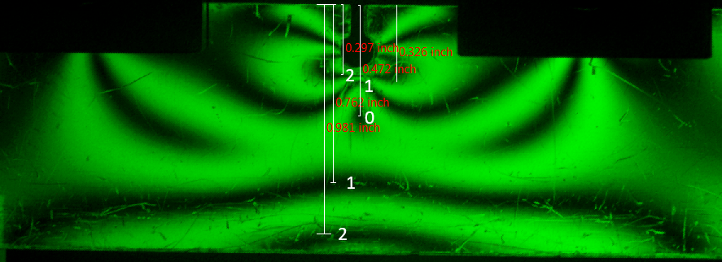
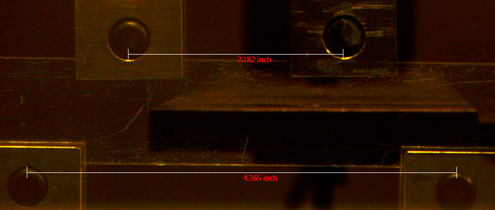
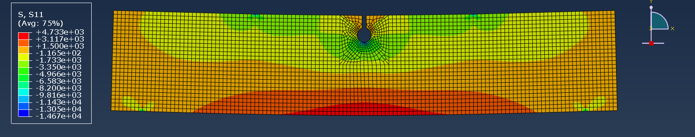

14 / Experimental stress analysis / Completed laboratory study
AE461 · Four-person laboratory team
Measuring notch stresses with photoelasticity and FEA
A notch changes where a beam carries stress, even when the applied load is unchanged. Our team used photoelastic beams in four-point bending to make that redistribution visible, then connected the fringe patterns to stress calculations and finite-element results. The central engineering question was whether a convenient analytical estimate remained suitable for each notch geometry.
- Team contribution
- Coauthored the experimental stress-analysis report
- Tools
- Photoelasticity · Four-point bending · Stress concentration · Abaqus
- Outcome
- Visualized notch stress concentrations and identified a limit in the V-notch approximation

Make an internal stress field measurable
The team compared an unnotched beam with U- and V-notched specimens in a screw-driven four-point-bending fixture. A load cell measured applied force, and a CCD camera recorded the specimens inside a monochromatic dark-field polariscope.
The unnotched beam provided a calibration case: its known bending-stress distribution was used to estimate the material fringe constant. Applying that calibration to the notched beams connected fringe order and measured position to the local stress distribution.


Check whether the model fits the geometry
The U-notch analytical estimate gave a maximum stress of 15.09 MPa, close to the 14.67 MPa compressive-stress magnitude reported by Abaqus. The V-notch comparison was substantially less consistent: the extrapolated estimate was 36.04 MPa, while Abaqus gave 19.95 MPa.
The report identifies a specific limitation in the V-notch calculation. Its notch-depth-to-radius ratio was 25.4, beyond the correlation’s stated range of 2–20. It therefore examined both a value bounded at 20 and an extrapolated estimate. The disagreement supports checking an approximation’s applicability before relying on its numerical result.


Outcome and engineering judgment
The fringe patterns showed stress becoming concentrated near the notch edges, rather than remaining distributed as in the unnotched beam. Additional specimens, including a horseshoe shape, supported qualitative identification of peak-stress locations even when the internal loads were not known.
As a report coauthor, I contributed to a study that connects physical observations, calibration, analytical assumptions, and FEA evidence. The important result is the ability to explain both agreement and disagreement; the report does not establish individual ownership of the measurements or Abaqus work.